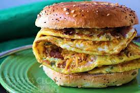

Bagel Omelet

Description
Breakfast sandwiches are a popular at many restaurants across the US.
McDonald's is know for their McMuffin, Chik-fil-a for there chicken minis.
Following this recipe will leave you with a healthy, protein packed sandwich
to start your morning right!
Ingredients
- 2 Eggs
- 1 bagel
- Shredded Cheese
Steps
- Add small amount of oil and bring pan to medium heat
- At same time, toast bagel in toaster
- Crack eggs into pan, scramble in pan
- When eggs are mostly solid, flip over
- Add and melt cheese
- Fold omelet and cut in half
- Add omelet to toasted bagel
- Enjoy your breakfast!
Home